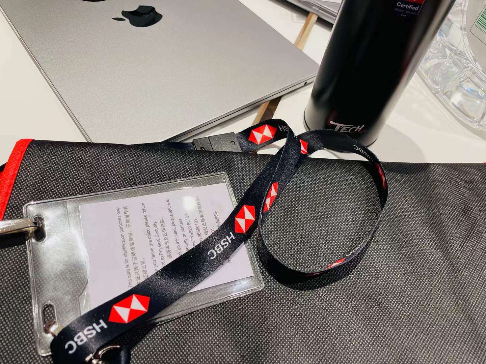

HSBC TECHNOLOGY COMPETITION · APR 2024
From stock prediction
to personalized strategy.
Learning price trends with LSTM. Turning market signals into
user-aware trading decisions with reinforcement learning.

THE PROJECT
A forecast is only the beginning.
The real challenge is turning a market signal into a decision that fits the investor.
This project connected an LSTM time-series model with a Proximal Policy Optimization (PPO) trading policy. The forecasting stage extracted price trends; the decision stage combined those signals with quantitative indicators, fundamentals and user trading history to recommend a personalized strategy.
As Technical Director, I led the technical design of this end-to-end loop: feature representation, time-series forecasting, state and action design, risk-adjusted rewards, and policy learning across users with different trading profiles.
The central idea is to separate two questions: how the market may evolve, and which action is appropriate for a particular investor. A useful forecast supplies evidence for a decision. The policy must also account for the investor’s context and the consequences of repeatedly acting on that evidence.
01 / METHODOLOGY
From observations to a learned decision policy
The architecture combines supervised sequence learning with reinforcement learning. Each model has a specific job: the LSTM represents temporal price structure, while PPO learns how a sequence of trading decisions affects the investor’s outcome.
The following explains the modeling rationale and an illustrative formulation. Exact feature windows, network sizes, reward coefficients and training settings were not included in the original project summary.
Building a state that describes both the market and the investor
A stock price alone says little about the context of a decision. Moving averages summarize the prevailing price level over a window; RSI expresses the balance of recent gains and losses; MACD compares exponential moving averages to describe changes in momentum. These indicators encode different views of the same price history. Their value is as a structured representation, not as independent evidence that a trade will succeed.
Fundamental indicators add a slower-moving perspective. Profit margins describe earnings conversion, while dividend coverage and retained profit reveal how much of those earnings remains after distributions. The financial analysis later on this page illustrates this layer. In a time-series system, a financial statement becomes available on its publication date, not retrospectively at the end of the fiscal period it describes.
User trading history adds the individual context. Two investors can observe the same market signal while having different positions, turnover patterns or exposure preferences. A useful state therefore joins market features, predictive information and user context rather than feeding a policy an isolated price forecast.
Here, m denotes technical indicators, f the fundamentals available at decision time, ŷ the predictive signal, and z the user context. The representation also needs careful scaling: statistics should be estimated on the training period and then applied unchanged to validation and test data. Otherwise, even a simple normalization step can introduce information from the future.
Why use an LSTM for the forecasting stage?
Price observations arrive as a sequence. An LSTM maintains a cell state and uses gates to regulate the information carried forward, added from the current input and exposed through the hidden state. This makes it a natural candidate for learning nonlinear relationships across a historical window without manually specifying every lag interaction. The gate equations are documented in the PyTorch LSTM reference.
In this architecture, a sequence of observed market features is mapped to a future price or trend signal. That signal becomes an input to the trading policy. Keeping this interface explicit makes it possible to diagnose a forecasting error separately from a poor trading decision.
ARIMA provides a useful statistical comparison because it models temporal dependence through autoregressive and moving-average terms, with differencing where needed. An LSTM offers greater modeling flexibility, but also introduces more parameters and more opportunities to overfit. The choice should be justified by held-out performance at the same forecast horizon, rather than by model complexity alone. A last-observation baseline is also useful for checking whether either model adds value over persistence.
Why PPO for the decision stage?
Trading is sequential: an action changes the position from which the next decision is made. A policy therefore needs to consider the consequences of a sequence of actions. PPO provides a policy-gradient framework for learning this behavior through interaction with an environment.
In the standard clipped formulation, an actor assigns probabilities to actions and a critic estimates state value. An advantage estimate indicates whether an action performed better or worse than expected. PPO compares the action probability under the updated policy with its probability under the policy that collected the trajectory. Clipping this ratio reduces the incentive for excessively large policy updates; it is not a guarantee of safe trading or stable profits.
This offers a practical middle ground between a basic policy-gradient update and more elaborate trust-region optimization. The algorithmic reference is Schulman et al., Proximal Policy Optimization Algorithms.
Making the objective personal
Personalization requires the investor’s context to influence the policy and its objective. A shared network can condition its decisions on a user representation, allowing similar market conditions to lead to different actions for different users. Historical behavior is useful context, but it should not automatically be interpreted as a reliable measure of a user’s risk tolerance.
One illustrative action space is a target stock exposure, w, bounded by the user’s permitted range. A corresponding reward can combine the next-period portfolio return with a cost for changing exposure and a penalty for downside risk:
The turnover term discourages repeatedly changing positions when the expected benefit is small. The coefficient λu expresses how strongly the objective penalizes downside for a particular user. Position limits and execution rules belong in the environment as well as the objective: a reward penalty alone does not enforce a hard constraint.
The reported project trained a PPO policy across heterogeneous users. To assess whether such a policy genuinely personalizes, an evaluation should compare it with a policy without user features, inspect outcomes by user profile, and test on users or periods not seen during training. These are useful validation questions; no user-level ablation results were supplied for this showcase.
Evaluating the forecast and the strategy separately
A defensible evaluation preserves chronology. Training uses earlier observations; validation determines modeling choices; a later test period remains untouched until evaluation. A walk-forward design can repeat this process across market conditions. Technical indicators must use trailing observations, and the forecasting signals used to train the policy should themselves be generated without access to future outcomes.
MAE measures the typical absolute forecasting error, while RMSE gives larger misses more weight. Both comparisons need the same target, scale, horizon and test timestamps. A percentage reduction should be computed as (baseline error − model error) / baseline error, separately for each metric.
Trading evaluation then asks a different question: what happens after acting on those forecasts? Cumulative return should be accompanied by transaction costs, turnover, volatility and maximum drawdown. Comparisons need the same initial capital, trading dates and execution assumptions. Lower prediction error can be useful, but it does not by itself establish that a policy delivers better risk-adjusted outcomes.
02 / RESULTS & INTERPRETATION
What the project reported
The competition project reported a 15–20% reduction in MAE and RMSE versus ARIMA, alongside an approximately 6–11% improvement in cumulative returns in simulated PPO backtests. It received the Silver Prize (2nd Place) in April 2024.
These results address two distinct parts of the pipeline. The forecasting comparison concerns the quality of the predictive signal. The simulated trading comparison concerns the outcome of a sequence of policy decisions. Reading them together helps explain the project’s end-to-end ambition, while keeping the two evaluation tasks separate.
The next question is how consistently the gains hold across time periods, users and trading costs. Raw prediction outputs, the PPO comparison baseline and the detailed evaluation protocol were not supplied with the project summary, so this page preserves the reported ranges without inferring per-run scores, statistical significance or live-trading performance.
The figures below are a separate descriptive analysis of the supplied financial workbook. They illustrate possible fundamental inputs and do not reproduce the competition’s LSTM or PPO experiments.
03 / A CLOSER LOOK AT THE DATA
The fundamentals behind the signals.
A separate exploratory analysis of the supplied HSBC financial workbook, covering 2014–2018.
Profitability, dividend coverage and retained earnings offer useful context for a financial feature vector. These visualizations make that fundamental layer tangible; they are not LSTM prediction plots or PPO backtest curves.
A profitability trough, followed by recovery.
Net margin increased from 5.7% in 2016 to 18.6% in 2017. Expense intensity fell over the same period. The 52.9% revenue decline shown for 2018 requires a reporting-scope check before interpretation.
Profit recovery does not erase distribution pressure.
FY profit covered ordinary dividends just 0.14× in 2016. Coverage recovered to 1.08× in 2017, while retained profit was only 678 in source units. These are earnings-based measures, not cash-flow coverage.
Turn financial statements into candidate state features.
Margins, tax rates, dividend coverage and retention ratios describe the fundamental layer. The diagram maps what this workbook provides and what must come from price series and user data; it does not reconstruct the competition’s training runs.
Data provenance and interpretation
Source: HSBC Dataset.xlsx, sheet “Dataset and figures”, five annual columns (2014–2018). Ratios were recalculated from the supplied amounts. Currency and amount scale are unspecified; 2018 period comparability is unverified. Supplied operating-margin and dividend-cover fields require reconciliation.
This workbook contains neither daily OHLCV prices nor user trading histories. It supports descriptive fundamental analysis, but does not independently validate the reported LSTM/PPO results. Heatmap scaling is descriptive across five years; a trained model would require time-aware alignment and training-only normalization.
TECHNICAL DIRECTOR · APRIL 2024
Connecting prediction with purpose.
An end-to-end project bringing together temporal modeling, risk-aware policy learning and the individual behind each trading decision.
Back to the project